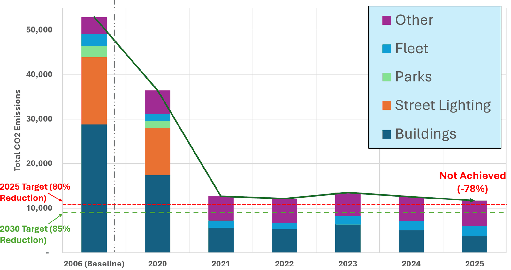
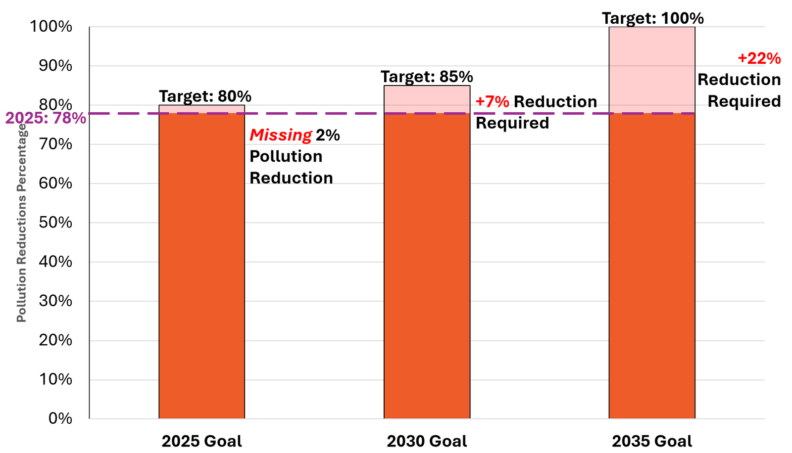
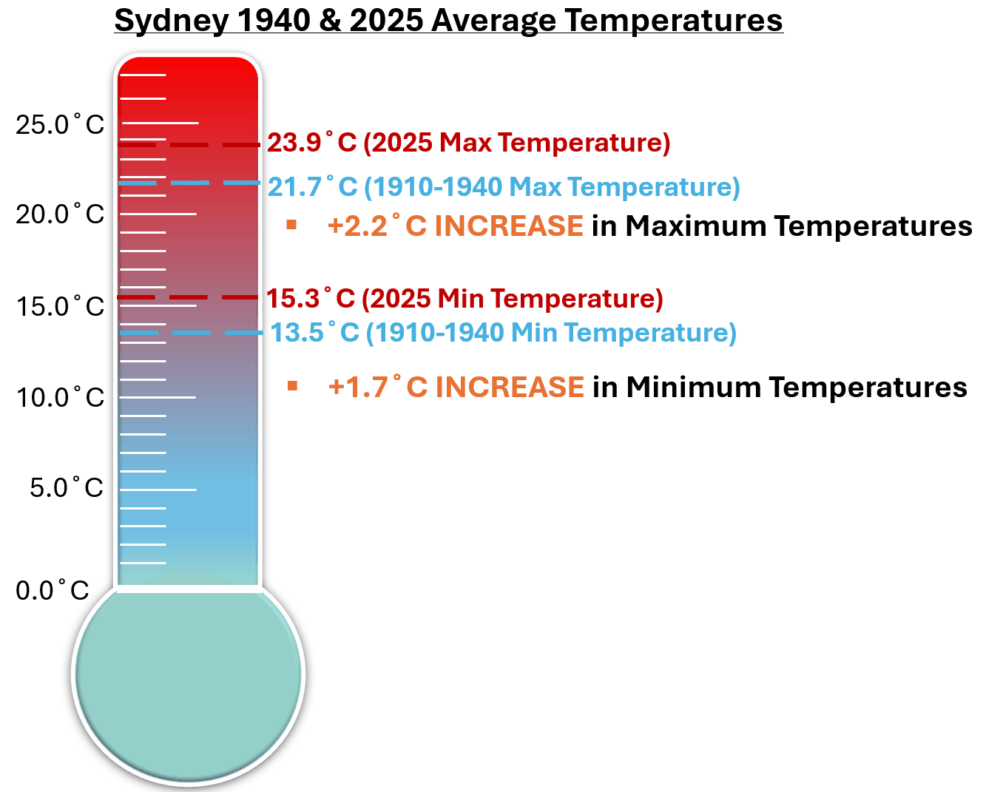
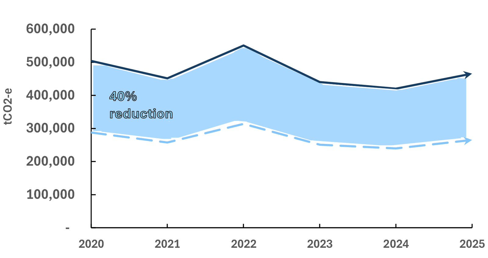
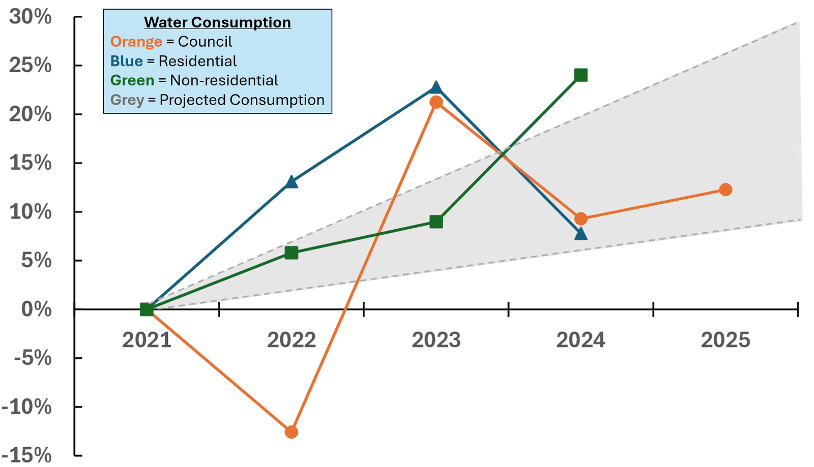
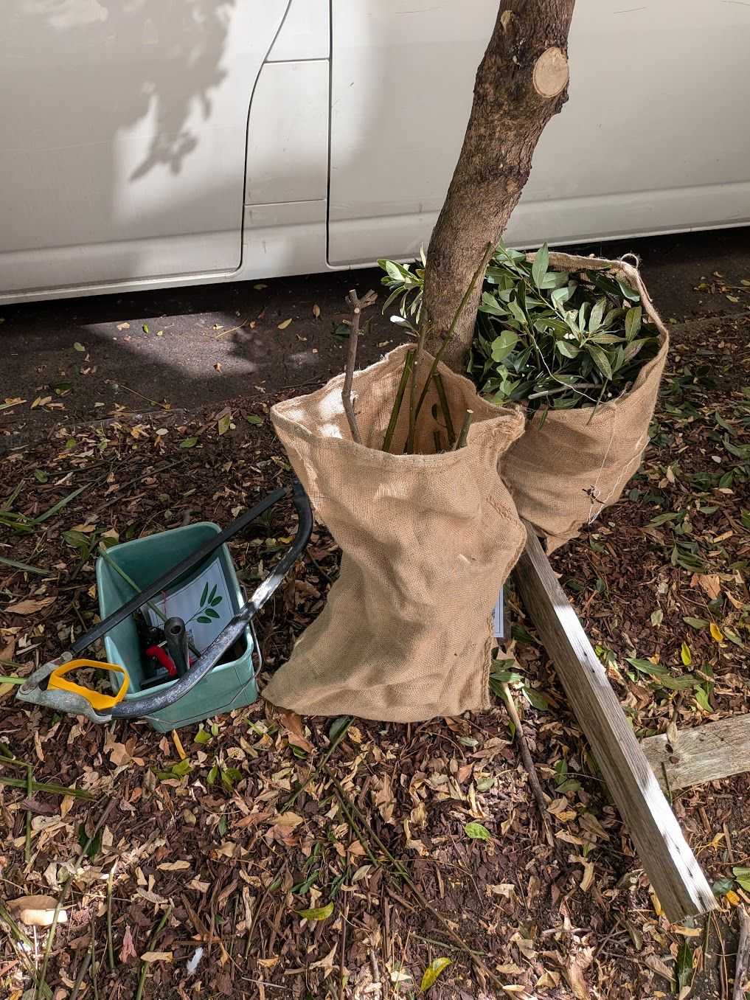

Energy & Sustainability
Composting & Carbon Emissions Analysis

Project overview
Turning climate reports into graphs people can read.
At Michael Mobbs's Sustainable House, I turned City of Sydney emissions, temperature, and water data into clear graphs for stakeholders, and did hands-on community composting in Chippendale.
I led the graphs document through Revisions K to V. It draws on the City of Sydney Green Reports, Bureau of Meteorology records, and the 2025 National Climate Risk Assessment. The graphs show that the Council cut its operational emissions by 78% from its 2006 baseline, missing its 2025 target of 80%. They also show that community partnerships are needed to reach the 2030 and 2035 targets.
Key work & outcomes
- Analyzed Council emissions by source (2006–2025) in Excel against the 2025, 2030, and 2035 targets.
- Simplified dense reports into single-message visuals, such as a thermometer for temperature rise and stacked bars for emissions.
- Maintained Coolseats composting benches across Chippendale that produced 5 tonnes of compost for the community.
- Co-wrote the Coolseats “Worms at Work” live compost data blog, explaining how to read the trial's pH, temperature, and moisture data.
Data story
Selected graphs from the document
Each graph makes one point, labels it directly, and cites its source report.





Field work
Composting in Chippendale
Coolseats turn street food scraps into compost that goes back to the neighbourhood.
I learned to use an auger, secateurs, compost bins, and a harvesting knife, and worked out a rotating aeration schedule with the other interns to keep the benches active. Moving compost also gave me a practical feel for torque and resistance, which connected to my Engineering Mechanics coursework.

Continue exploring